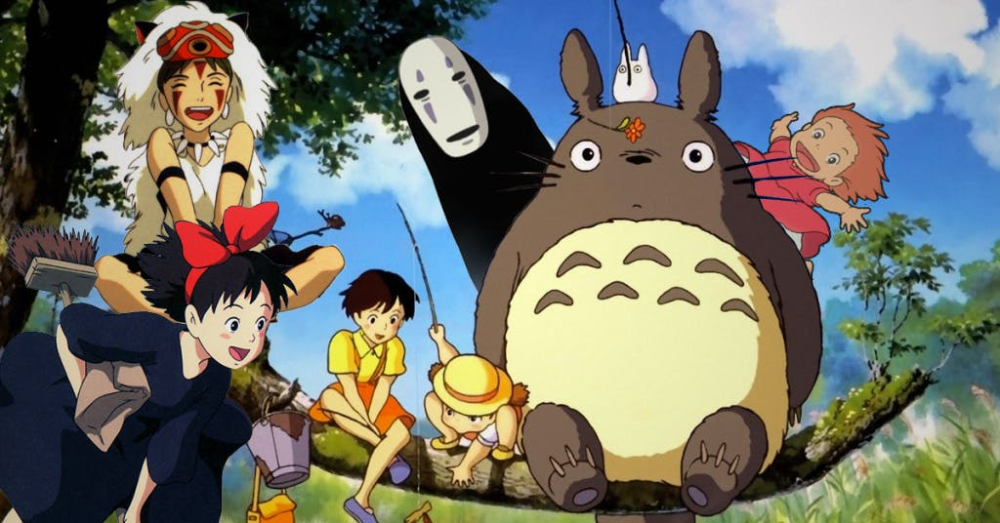
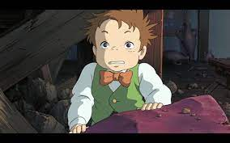
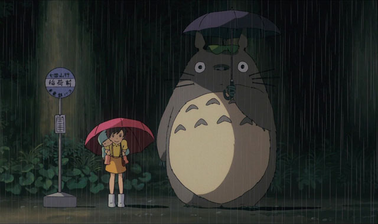

|

Studio Ghibli is the beginning of so many dreams |

Spirited Away is, in my opinion, the best movie of all time It is a tender protrayal of a little girl who has to grow up too fast. I don't think any work of art/literature has as profound of an impact on me as Spirited Away has. |

From Up on Poppy Hill does not get as much love as it should have. The visuals are stunning and the characters intriguing. We all need a Umi in our lives. |
|

Markl is one of my favorite characters from Studio Ghibli. He is way too cool in Howl's. |
|

Totoro does not have as special of a place in my heart as some of the other ones do. But this movie is pure joy. I enjoyed the ride for as long as it has lasted. |